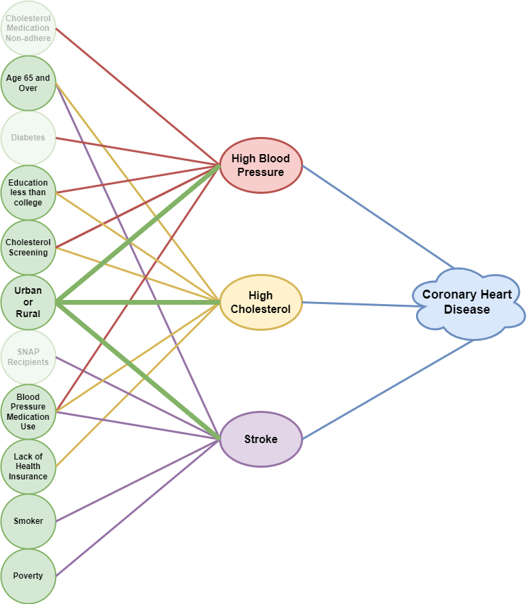

Healthcare Access and its Effects on Coronary Heart Disease Prevalence
ABSTRACT
This project represents the culmination of our Master of Data Science program at Willamette University’s School of Computing & Information Sciences, under the supervision of Dr. Jameson Watts. Serving as a testament to the knowledge and skills we have honed throughout our course, this capstone project required us to plan and execute a comprehensive data science project that holds consequential potential for an organization or society at large.
We chose to focus on a topic of significant personal and societal importance - the impact of disparities in healthcare access on the prevalence of coronary heart disease. By examining this critical issue, we aim to contribute meaningfully to the ongoing discussions on healthcare equity and accessibility. The findings and insights gleaned from our research have the potential to influence policymaking and interventions in the healthcare sector, ultimately enhancing outcomes for individuals across urban and rural communities.
INTRODUCTION
The relationship between access to healthcare services and individual health outcomes is profound, with notable disparities emerging between urban and rural areas. To create effective interventions and policies, it is imperative to understand the factors contributing to these discrepancies and their impact on health outcomes, particularly cardiovascular diseases.
This project aims to illuminate the key factors influencing healthcare access disparities, with a view to leveraging this knowledge in developing policy interventions for improving cardiovascular disease outcomes. Through rigorous data analysis and predictive modeling, we have established a correlation between the prevalence of heart disease and the urban or rural residence of individuals.
The forthcoming sections detail our investigative journey, offering a transparent look into our methodology and conclusions. We will first present our exploratory analysis, illuminating interesting patterns we unearthed in the process. Subsequently, we delved into the machine learning models that helped us gain deeper insights from our data exploration. Following this, we detail how we harnessed these insights to make predictive analyses with our machine learning models. Finally, we provide recommendations and propose potential enhancements that could influence the rate of heart disease prevalence in these areas.
Our investigation aims to serve as a roadmap for future efforts targeting healthcare access disparities, highlighting the vital role of data science in unraveling complex societal issues. By bridging the knowledge gap, we hope to inspire impactful changes that improve healthcare accessibility, ultimately leading to healthier lives irrespective of geographical residence.
METHODOLOGY
Our research journey began with a review of datasets made available by several organizations, including the Centers for Disease Control and Prevention, County Health Rankings & Roadmaps, Behavioral Risk Factor Surveillance System (BRFSS), and the U.S. Census Bureau, among others. Initially, we endeavored to merge these diverse datasets into a singular, usable set—a complex and time-consuming task. However, this effort was superseded by our discovery of the Interactive Atlas of Heart Disease and Stroke, provided by the CDC. This comprehensive dataset offered a rich pool of information, encompassing heart disease prevalence data, other medical conditions, demographics, healthcare delivery and insurance, as well as social, economic, and environmental data. All data was presented at both the state and county level, further aiding our analysis.
As we walk you through this journey, our findings will demonstrate the integral role of methodical data analysis in unearthing the complex factors contributing to disparities in healthcare access. The goal is to provide a thorough and nuanced understanding of the healthcare landscape, which could influence future interventions and policy development.
Data Cleaning and Feature Engineering
The data acquisition from the CDC Interactive Atlas of Heart Disease and Stroke proved to be a complex task, as the information wasn’t available as a single dataset. Instead, we had to download more than 60 individual datasets. Managing these files and coordinating the development of the necessary code across our team was challenging. To streamline these tasks and handle version control, we utilized Git and GitHub—a decision that provided valuable experience in collaborative coding and version management.
Once compiled, the data needed substantial manipulation to be tailored to our specific needs. Our preparation process involved merging the various datasets into a single, coherent dataset, eliminating superfluous features and observations, and conducting other data manipulations to improve usability.
A crucial part of our data preparation was handling missing and “NA” values. In instances where missing values could be inferred from alternative data sources, we conducted further research and used coding methods to populate these data. For missing values without readily available replacements, we imputed the data using mean values based on specific criteria.
Table 1: Sample data from fully cleaned dataset
Following our comprehensive data manipulation process, we had transformed the raw data into a structured and analyzable format, as in Table 1. This equipped us to dive into a detailed exploratory analysis. This painstaking process of data preparation emphasized the critical role of thorough data cleaning and feature engineering in successful data science projects. By laying a solid foundation through these initial steps, we were able to engage in robust analyses that yield dependable insights and conclusions.
Exploratory Data Analysis
Machine Learning Models

RECOMMENDATIONS
blah blah blah.
CONCLUSION
blah blah blah and done.